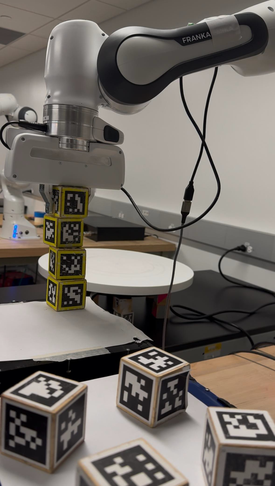
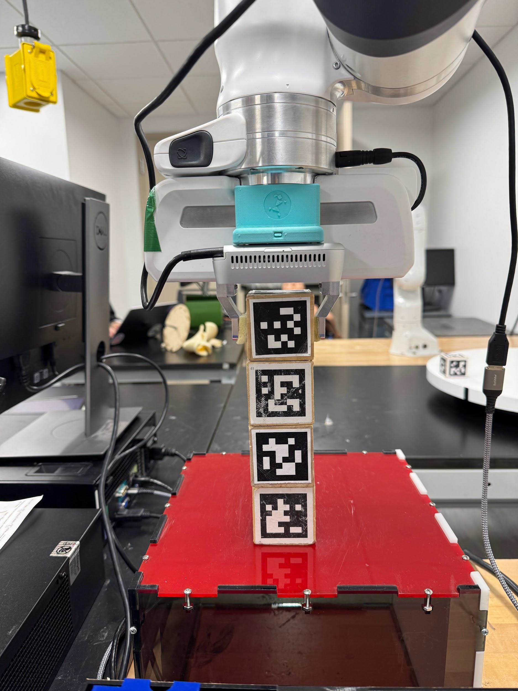
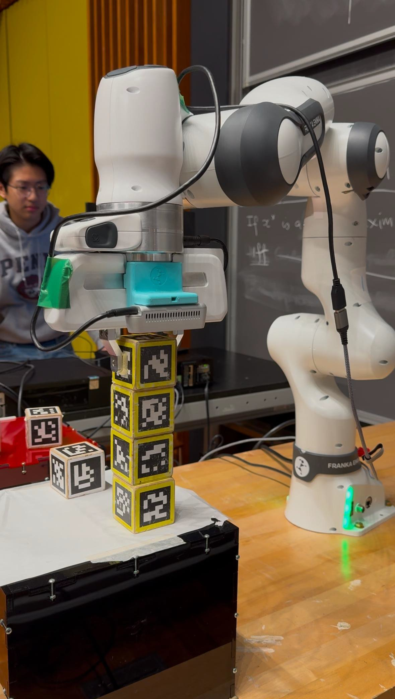
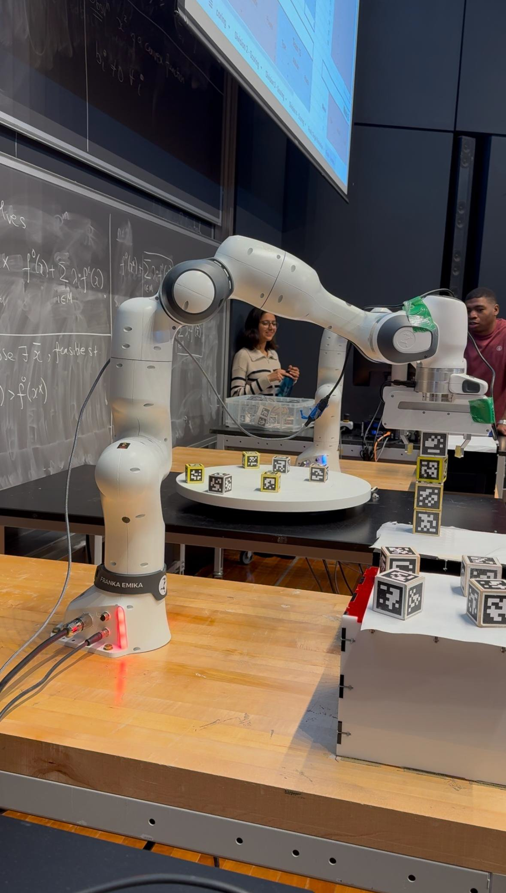
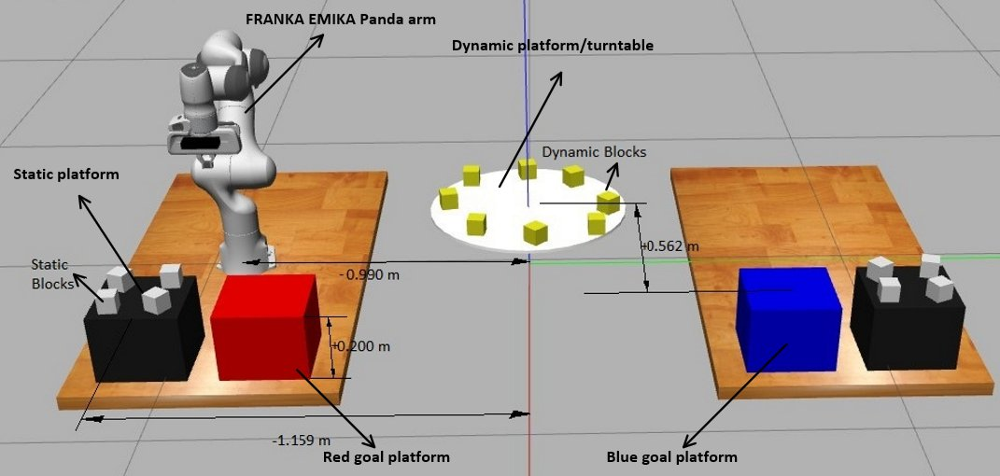

Autonomous pick-and-place system for the FRANKA EMIKA Panda arm — detecting, picking, and stacking 50 mm wooden cubes from both a static platform and a continuously rotating turntable, under real competition conditions against an opposing robot.
Two robots compete simultaneously. Each team must pick 50 mm AprilTag-labeled cubes from their own static platform and from a shared rotating turntable, then stack them on their goal platform. Scoring is Points = Value × Altitude — a perfectly aligned stack of 8 blocks (4 dynamic on top of 4 static) would yield a theoretical 28,000 points.
The core engineering challenge: dynamic blocks move continuously at 0.4 RPM. The robot must predict where a block will be by the time the arm arrives — not where it is when the camera sees it. Our strategy was to guarantee the higher-value dynamic blocks first, then combine the two stacks into a tower of 8.
The codebase went through 7 distinct stages — from a bare ROS scaffold to a modular competition build. The naming convention tells the story: original → combined → new_check → V3 → V4. Each version solved a real problem that the previous one couldn't handle.
ArmController, ObjectDetector, move to start position, block detection stub. No logic, no functions. The blank canvas.detect_static_block_positions, stack_static_blocks, stack_dynamic_blocks, combine_stack. Static block pipeline working end-to-end; dynamic blocks handled with a skip_turntable flag as a placeholder for prediction.IK_position_null_Leo.py and IK_position_null_Fast.py reflect Leo's IK optimizations. Jason's branch explored dynamic pickup; Eric's branch refined gripper logic. These were never intended to be deployed — they're the experimentation layer.stack_dynamic_blocks now takes detector as an explicit parameter instead of the skip_turntable flag. check_grab_succeed added as a new failsafe. Gripper close position tuned from 0.04 m to 0.045 m. Team calibration offsets broken out separately for red and blue.rotate_block_on_turntable now actually computes a predicted_pose: the block's future position when the arm arrives, not where it was when the camera saw it. Uses ttotal = tmovement + 5 s calibration offset and a Rz(θ) rotation about the turntable center. A collision safety threshold was also added — the robot skips pickup if the block's x-axis orientation falls outside a safe window to prevent the gripper impacting the block's side.combine_stack removed — the timed environment didn't reliably allow the full 8-block procedure. Cleaner execution path, same prediction core. Back to ~1,066 lines but with all the hardware-tested refinements baked in.IK_position_null_Leo.py — a null-space IK solver with joint-centering secondary task to avoid self-collision. The Fast variant reduced IK computation time for time-critical dynamic block targeting.



